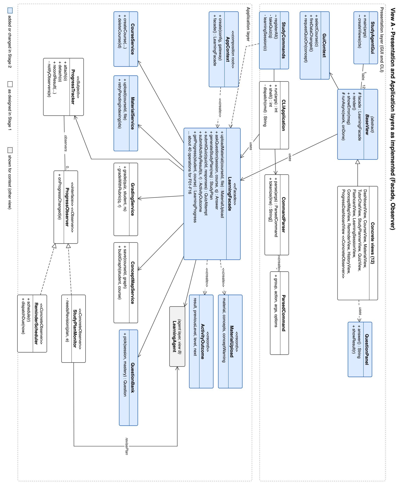
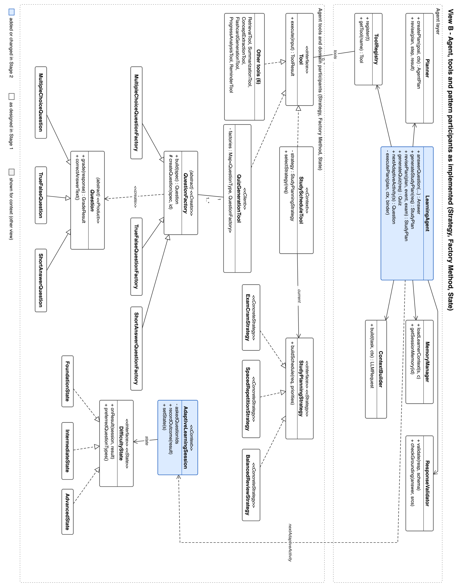
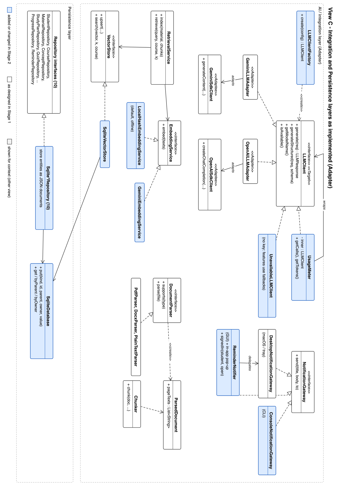

| Student | Nazanin Fatemeh Soleimani (222050579) |
| Repository | https://github.com/Nazaninsoleimani/EECS3311 (project folder AI Study and Learning Agent/) |
| Stage 1 design | docs/stage1/Stage1_Report.pdf |
| Implementation period | October 20 - November 10, 2026 |
| Language and build | Java 21, Gradle multi-module (backend, frontend:cli, frontend:gui) |
| LLM | Google Gemini (gemini-3.8-flash, free tier) through the LLMClient adapter; any OpenAI-compatible model by configuration |
How to read this report: section 2 traces every Stage 1 feature (F01-F16) to the classes, methods, patterns and demonstration video that realise it; section 3 explains the six design patterns with the updated class diagrams; section 4 lists every difference from the Stage 1 design with its reason; sections 5-7 cover AI collaboration, commits and verification, and the video index. Items highlighted like this are completed by the student before submission.
Application. The AI Study and Learning Agent is a desktop application for university students. A student creates a course, uploads their own lecture notes (PDF, DOCX, TXT, Markdown), and the agent works over that material: it answers questions with citations to the source pages, summarises lectures, extracts the course's concepts and their relations, plans study time up to the exam, generates and grades quizzes and flashcards, finds weak topics, adapts practice difficulty, and tracks progress. Everything is available through a Swing GUI (12 views in a sidebar layout with light and dark themes, built on FlatLaf) and a study command-line interface (32 commands); both call the same LearningFacade.
Users. University students. Each student creates an account (name, email, password) on the GUI sign-in screen or with study account create; the same account works in both front ends and sees only its own courses, progress and history. All data is stored locally in one SQLite file (~/.study-agent/study-agent.db); passwords are stored only as salted hashes.
AI / LLM integration and agent behaviour. The LLM is never called directly by a feature. Every AI goal goes through LearningAgent, which (1) loads the learner context from memory (mastery, recent history, exam date), (2) asks the Planner for a plan of tool steps, (3) executes the steps through the ToolRegistry (retrieval, progress analysis, scheduling, generation, reminders), letting the Planner revise the remaining plan after each observation (for example, no generation when retrieval found nothing), (4) builds prompts with retrieved sources inside a token budget (ContextBuilder), and (5) validates every LLM output (ResponseValidator: JSON schema fields, citation grounding) before it becomes a domain object, regenerating once when validation fails. Session memory keeps the tutor conversation so follow-up questions are rewritten into standalone retrieval queries. Deterministic code makes the decisions that must be reliable (mastery, difficulty transitions, scheduling strategy, grading of objective questions); the LLM generates content.
Working functionality. All 16 Stage 1 features are implemented and working in both front ends (table below). The build compiles three modules and runs 130 automated JUnit tests, all passing (section 6). Without an API key the deterministic features work fully and AI features use documented fallbacks (extractive answers, deterministic plan priorities, stored questions) or report clearly that the AI is unavailable.
| ID | Feature | Type | Status | GUI view | CLI command |
|---|---|---|---|---|---|
| F01 | Course Management | Deterministic | Implemented | Courses | course create|list|update|delete |
| F02 | Material Upload and Management | Deterministic | Implemented (modified) | Materials | material upload|list|delete|reindex |
| F03 | Document Summarization | AI-based | Implemented | Materials | material summarize |
| F04 | Concept Extraction | AI-based | Implemented | Materials | material extract-concepts, automatic on upload |
| F05 | Question Answering over Materials | Hybrid | Implemented (modified) | Tutor | ask, ask -i |
| F06 | Personalized Study-Plan Generation | Hybrid | Implemented | Study Plan | study-plan generate|show|done |
| F07 | Flashcard Generation and Review | Hybrid | Implemented | Flashcards | flashcards generate|list|review |
| F08 | Quiz Generation | AI-based | Implemented | Quiz | quiz generate|list |
| F09 | Automatic Quiz Grading | Hybrid | Implemented | Quiz | quiz take, quiz generate --take |
| F10 | Answer Explanation | AI-based | Implemented | Quiz (Explain) | quiz explain |
| F11 | Weak-Topic Identification | Hybrid | Implemented | Progress | weak-topics show |
| F12 | Adaptive Question Difficulty | Hybrid | Implemented (modified) | Learning Session | learning-session start |
| F13 | Learning Progress Tracking | Deterministic | Implemented | Progress, Dashboard | progress show |
| F14 | Study Reminder Management | Deterministic | Implemented | Reminders | reminder add|list|cancel|dispatch |
| F15 | Concept Relationship Visualization | Hybrid | Implemented | Concept Map | concept-map show [--format mermaid] |
| F16 | Learning Session History | Deterministic | Implemented | History | history show |
| N01 | Student Accounts (new; not counted toward the 10 features) | Deterministic | New | Sign-in screen, header | account create|login|logout|whoami |
Limitations and incomplete functionality (honest list).
LLMClient, so they verify the agent's control flow, validation and fallbacks, not the quality of real model output. Live-model behaviour was checked manually with a Gemini key on November 5 (section 6.2).LocalHashEmbeddingService) are lexical (hashed, stemmed words), not semantic, so a question phrased with different words than the notes may retrieve less. Gemini embeddings can be enabled with EMBEDDING_PROVIDER=gemini (section 4).All classes are under ca.yorku.eecs3311.studyagent. Paths are abbreviated: app/ = backend/.../application, agent/, tools/ = agent/tools, domain/, integ/ = integration, persist/ = persistence, gui/ = frontend/gui/.../presentation/gui, cli/ = frontend/cli/.../presentation/cli. Every feature is reached from the GUI view or CLI command through LearningFacade (Facade).
| Stage 1 reference | F01, UC01, SD11 |
| Status | Implemented (Stage 1 rule "exam date in the past is rejected" enforced in week 3) |
| Classes / files and responsibilities | gui/CourseView (form, table, selection); cli/CLIApplication (course commands); app/LearningFacade (entry, history event); app/CourseService (unique code per student, exam-date check, cascading delete, resolve by id or code); domain/Course; persist/CourseRepository + SqliteCourseRepository; agent/MemoryManager (records COURSE_* events) |
| Key methods | createCourse(), updateCourse(), deleteCourse(), listCourses(), resolve(), requireUniqueCode(), requireFutureExam() |
| Design patterns | Facade |
| Video | [link + timestamp] |
Deterministic The view or CLI passes code, title and exam date to LearningFacade.createCourse(); CourseService builds the Course (which normalises the code), rejects a duplicate code or a past exam date, and saves it; the facade records COURSE_CREATED. Deleting asks for confirmation in both front ends, then removes the course's materials, vectors, concepts, progress, quizzes, decks and plans.
| Stage 1 reference | F02, UC02 (includes UC04), SD07 |
| Status | Implemented, modified: upload returns MaterialUpload and runs concept extraction (UC04); embedding failures keep the material pending and indexing is retried (section 4, C1 and C3) |
| Classes / files and responsibilities | gui/MaterialView (file chooser, status table, Retry indexing); app/MaterialService (validation, parse, chunk, index, pending retry); integ/parsing/DocumentParser with PdfParser (PDFBox, per page), DocxParser, PlainTextParser; integ/parsing/Chunker (800-token chunks, 100 overlap, page refs); integ/retrieval/RetrievalService, EmbeddingService, SqliteVectorStore; domain/CourseMaterial, DocumentChunk; app/MaterialUpload |
| Key methods | uploadMaterial(), upload(), findParser(), supports(), parse(), chunk(), index(), embed(), upsert(), markIndexed(), markFailed(), markIndexingPending(), retryPendingIndexing() |
| Design patterns | Facade; parsers are interchangeable DocumentParser implementations |
| Video | [link + timestamp] |
Deterministic MaterialService.upload() checks the file exists, its type has a parser and it is under 50 MB, then parses, chunks and saves the chunks, and indexes them (embed + upsert). Unsupported types are rejected before anything is stored; empty or unreadable files are stored as FAILED with the reason; an embedding outage leaves the material UPLOADED with its chunks so retryPendingIndexing() (run at start-up, material reindex, Retry indexing button) can finish later.
| Stage 1 reference | F03, UC03, SD05 |
| Status | Implemented |
| Classes / files and responsibilities | gui/MaterialView (length choice, summary panel); app/LearningFacade.summarizeMaterial() (requires an indexed material, stores the summary); agent/LearningAgent.summarize(); agent/Planner (chooses single pass or map-reduce above 6,000 tokens); tools/SummarizationTool (map: one LLM call per group of chunks; reduce: structured JSON); agent/ResponseValidator; domain/Summary, SummaryOptions |
| Key methods | summarizeMaterial(), summarize(), createPlan(), execute(), mapSections(), generate(), generateStructured(), validate(), saveSummary() |
| Design patterns | Facade, Adapter |
| Video | [link + timestamp] |
AI-based The agent counts the material's tokens, the Planner picks the mode, and SummarizationTool produces {summary, keyPoints, sourceRefs}; invalid output is retried once; an LLM failure returns "Summary unavailable, retry later" and nothing partial is stored.
| Stage 1 reference | F04, UC04 (included by UC02), SD07 |
| Status | Implemented (runs automatically after upload since week 3, and on demand) |
| Classes / files and responsibilities | app/LearningFacade.extractConcepts() and uploadMaterial(); agent/LearningAgent.extractConcepts(); tools/ConceptExtractionTool (batches of chunks, reuses known course concepts, drops relations to unknown concepts and self-relations); app/ConceptMapService.save() (persists and remaps relation ids to stored concepts); domain/Concept, ConceptRelation, ConceptGraph; persist/ConceptRepository (merge by normalised name) |
| Key methods | extractConcepts(), execute(), generateStructured(), validate(), saveAll(), saveRelations() |
| Design patterns | Facade, Adapter |
| Video | [link + timestamp] |
AI-based with deterministic validation. The LLM proposes concepts and typed relations (PREREQUISITE_OF, PART_OF, RELATED_TO) per batch; validation merges duplicates and discards invalid relations, reporting how many were dropped. If the LLM is unavailable the upload still succeeds and the student is told extraction can be re-run.
| Stage 1 reference | F05, UC05 (includes UC17), SD02 |
| Status | Implemented, modified: with no LLM the agent returns the most relevant passages with citations instead of an error (section 4, C5) |
| Classes / files and responsibilities | gui/TutorChatView (conversation, "Show agent plan"); cli ask and ask -i; LearningAgent.answerQuestion(); MemoryManager, SessionMemory (last 20 turns); Planner.retrievalQuery() (rewrites follow-ups); tools/RetrievalTool → RetrievalService (threshold); ContextBuilder (numbered sources, token budget); ResponseValidator.checkGrounding(); domain/Answer |
| Key methods | askQuestion(), answerQuestion(), generateGroundedAnswer(), extractiveAnswer(), retrieve(), build(), checkGrounding(), appendToSession() |
| Design patterns | Facade, Adapter |
| Video | [link + timestamp] |
Hybrid Retrieval and the grounding check are deterministic; the LLM writes the answer only from the numbered sources. If no chunk passes the similarity threshold, the LLM is not called and the student is told the material does not cover the question. An answer whose citations are missing or point to non-existent sources is regenerated once with a stricter instruction; if it still fails it is returned with grounded=false and a warning.
| Stage 1 reference | F06, UC06 (includes UC11, UC17), SD01, SD04 |
| Status | Implemented (ungrounded-plan warning and one retry of invalid priorities added in week 3) |
| Classes / files and responsibilities | gui/StudyPlannerView; cli study-plan; LearningAgent.generateStudyPlan(), prioritize(), revisePlan(); Planner (analyze → retrieve → schedule → remind); tools/ProgressAnalysisTool (deterministic ranking); tools/StudyScheduleTool (Strategy context); ExamCramStrategy, SpacedRepetitionStrategy, BalancedReviewStrategy; tools/ReminderTool; app/StudyPlanMonitor (revision); domain/StudyPlan, StudyTask, TopicPriority |
| Key methods | generateStudyPlan(), createPlan(), rankTopics(), prioritize(), selectStrategy(), buildSchedule(), revisePlan(), needsRevision(), completeStudyTask() |
| Design patterns | Strategy, Observer (revision), Facade, Adapter |
| Video | [link + timestamp] |
Hybrid ProgressAnalysisTool ranks concepts by priority = 0.6(1 - mastery) + 0.25 recency gap + 0.15 prerequisite weight; focus topics are boosted. The LLM may reorder the candidates and write a learning objective per topic and the rationale (names it invents are ignored; invalid output is retried once, then the deterministic ranking is used with a warning). The tool picks the strategy from the days left (≤ 7 cram, ≥ 21 spaced repetition, otherwise or without an exam balanced) and allocates 30-minute slots. Reminders are created for the first seven planned days. When a concept's mastery drops sharply or below 50% and the plan does not revisit it within three days, StudyPlanMonitor asks the agent for a revised plan and archives the old one.
| Stage 1 reference | F07, UC07, SD08 |
| Status | Implemented |
| Classes / files and responsibilities | gui/FlashcardView (generate, flip, Again/Hard/Good/Easy); cli flashcards generate|list|review (CommandParser, StudyCommands); LearningAgent.generateFlashcards(); tools/FlashcardGenerationTool (drops empty and duplicate cards); domain/FlashcardDeck, Flashcard (Leitner boxes); LearningFacade.reviewFlashcard() → ProgressTracker.recordResult() |
| Key methods | run(), parse(), dispatch(), generateFlashcards(), execute(), saveDeck(), dueFlashcards(), reviewFlashcard(), recordReview(), toGradeResult() |
| Design patterns | Facade, Adapter, Observer (review results feed mastery) |
| Video | [link + timestamp] |
Hybrid The LLM writes front/back pairs only from retrieved material (no matching material: an error, nothing generated); a shortfall is reported on the deck. Review is deterministic: Good/Easy move the card up a box, Again/Hard back to box 1; intervals 1, 2, 4, 8, 16 days. Each rating is also a graded result for the card's concept.
| Stage 1 reference | F08, UC08, SD03 part A |
| Status | Implemented |
| Classes / files and responsibilities | gui/QuizView (count, difficulty, types, concepts); cli quiz generate; LearningAgent.generateQuiz(); tools/QuizGenerationTool (Factory Method client, up to three rounds); QuestionFactory + MultipleChoiceQuestionFactory, TrueFalseQuestionFactory, ShortAnswerQuestionFactory; domain/Question and subclasses, QuestionSpec, Quiz; persist/QuizRepository |
| Key methods | generateQuiz(), execute(), toSpec(), resolveConcept(), build(), createQuestion(), save() |
| Design patterns | Factory Method, Facade, Adapter |
| Video | [link + timestamp] |
AI-based The LLM returns question specifications as JSON; each is built by the factory registered for its type, which rejects invalid specs (wrong option count, unmatched answer, unknown concept, empty prompt). Rejection reasons are fed back for replacement questions; a quiz with fewer questions carries a notice. A whole-course quiz targets the course's known concepts so every answer updates mastery.
| Stage 1 reference | F09, UC09, SD03 part B |
| Status | Implemented |
| Classes / files and responsibilities | gui/QuizView + QuestionPanel (inputs per type, feedback); cli quiz take; LearningFacade.submitQuiz(); app/GradingService; Question.grade() in each subclass; domain/QuizAttempt, GradeResult; app/ProgressTracker.recordAttempt(); ConceptMastery, PerformanceRecord |
| Key methods | submitQuiz(), grade(), gradeResponse(), Question.grade(), gradeWithRubric(), computeScore(), recordAttempt(), applyResult(), notifyObservers() |
| Design patterns | Observer, Facade, Factory Method products (polymorphic grade()) |
| Video | [link + timestamp] |
Hybrid Multiple-choice and true/false are graded exactly by the question objects; unanswered questions score 0. Short answers are scored by the LLM against the model answer and rubric (validated 0-1 score); without an LLM the keyword grade is shown and flagged "needs review", which is stored but not applied to mastery. The attempt is saved and ProgressTracker updates mastery and notifies observers.
| Stage 1 reference | F10, UC10 (extends UC09), SD03 part C |
| Status | Implemented (CLI also accepts the question number) |
| Classes / files and responsibilities | gui/QuizView (Explain button per question); cli quiz explain; LearningFacade.explainAnswer(); LearningAgent.explainAnswer(); RetrievalTool, ContextBuilder; domain/Explanation |
| Key methods | requestExplanation(), explainAnswer(), findAttempt(), execute(), build(), generate() |
| Design patterns | Facade, Adapter |
| Video | [link + timestamp] |
AI-based The explanation is generated from the question, the correct answer, the student's answer and retrieved sources, citing them as [n]; it is marked not source-backed when it cites none. Without an LLM the stored correct answer, the grading feedback and the most relevant passage are shown.
| Stage 1 reference | F11, UC11, SD06 |
| Status | Implemented ("at least 5 graded answers" threshold aligned in week 3) |
| Classes / files and responsibilities | gui/ProgressDashboardView (Analyze weak topics); cli weak-topics show; LearningAgent.diagnoseWeakTopics(), diagnoseWithLlm(); tools/ProgressAnalysisTool.rankTopics(); domain/WeakTopicReport, WeakTopic, ConceptMastery |
| Key methods | analyzeWeakTopics(), diagnoseWeakTopics(), rankTopics(), recommendedActivity(), generateStructured(), validate() |
| Design patterns | Facade, Adapter |
| Video | [link + timestamp] |
Hybrid Deterministic: a concept is weak when its mastery is below 50% after at least three attempts; with fewer than five graded answers in the course the report says the data is insufficient and suggests where to start. With enough data the LLM reads the student's wrong answers and the relevant material and writes the likely misconception and a recommended activity; on failure the deterministic report is returned.
| Stage 1 reference | F12, UC12, SD04 |
| Status | Implemented, modified: submitActivityResult() returns ActivityOutcome; stored-question fallback added (section 4, C2 and C4) |
| Classes / files and responsibilities | gui/LearningSessionView; cli learning-session start; LearningFacade.startAdaptiveSession(), submitActivityResult(), endAdaptiveSession(); GradingService; ProgressTracker.recordActivity(); domain/AdaptiveLearningSession (State context) with FoundationState, IntermediateState, AdvancedState; LearningAgent.nextAdaptiveActivity(); QuizGenerationTool; app/QuestionBank; app/ActivityOutcome |
| Key methods | startAdaptiveSession(), submitActivityResult(), gradeResponse(), recordOutcome(), onResult(), setState(), preferredQuestionTypes(), nextAdaptiveActivity(), pickConcept(), QuestionBank.pick() |
| Design patterns | State, Observer, Factory Method, Facade |
| Video | [link + timestamp] |
Hybrid The state machine decides difficulty (three correct in a row: up one level; two wrong: down one level); the agent picks the most urgent concept not asked in the last two activities and asks the LLM for one question of a type preferred by the current state. If generation fails, an unused stored question from the course's earlier quizzes is reused (same level and preferred type first); with none left the session ends gracefully, and when every concept is mastered it suggests a mixed review quiz.
| Stage 1 reference | F13, UC13, SD06 (view), SD03/SD04 (updates) |
| Status | Implemented |
| Classes / files and responsibilities | gui/ProgressDashboardView (ProgressObserver; table with mastery bars, live update line), gui/DashboardView (summary); cli progress show; app/ProgressTracker (Subject), ProgressObserver; domain/ConceptMastery (EMA, alpha 0.3), PerformanceRecord, LearningProgress, ProgressEvent; persist/ProgressRepository |
| Key methods | getProgress(), recordAttempt(), recordResult(), applyResult(), attach(), notifyObservers(), onProgressChanged(), loadProgress() |
| Design patterns | Observer, Facade |
| Video | [link + timestamp] |
Deterministic Quizzes, adaptive answers and flashcard reviews all go through ProgressTracker, which stores a performance record, updates the concept's mastery (m ← 0.7m + 0.3s) and notifies observers; the dashboard refreshes without the grading code knowing it exists. The empty state suggests a first activity.
| Stage 1 reference | F14, UC14, SD09 |
| Status | Implemented |
| Classes / files and responsibilities | gui/ReminderView; cli reminder add|list|cancel|dispatch; app/ReminderScheduler (store, background dispatch every 60 s, ProgressObserver); domain/Reminder (recurrence); integ/notification/NotificationGateway with DesktopNotificationGateway (GUI, macOS notification / system tray) and ConsoleNotificationGateway (CLI); tools/ReminderTool (plan reminders) |
| Key methods | scheduleReminder(), schedule(), cancel(), dispatchDue(), findDue(), isDue(), markDelivered(), send(), onProgressChanged() |
| Design patterns | Observer, Facade |
| Video | [link + timestamp] |
Deterministic One-off reminders in the past are rejected; daily and weekly ones move to their next occurrence after delivery; a failed delivery stays pending and is retried. Overdue reminders are delivered when the application next starts. Reminders are also created by the agent for planned days and by the scheduler when a concept falls below the weak threshold (once per concept).
| Stage 1 reference | F15, UC15, SD10 |
| Status | Implemented ("Quiz me on this" added in week 3) |
| Classes / files and responsibilities | gui/ConceptMapView (drawn graph coloured by mastery, details on click, Copy as Mermaid, Quiz me on this); gui/GuiContext.requestQuizOn() → QuizView.prepareFor(); cli concept-map show [--format text|mermaid]; app/ConceptMapService.buildGraph(), renderText(); domain/ConceptGraph (neighbours(), prerequisitesOf(), toMermaid()) |
| Key methods | loadConceptMap(), getConceptMap(), buildGraph(), selectConcept(), neighbours(), prerequisitesOf(), requestQuizOn() |
| Design patterns | Facade |
| Video | [link + timestamp] |
Hybrid Relations were proposed by the LLM during F04; viewing is deterministic and makes no LLM call. Grey = not practised, red = below 50%, amber = learning, green = at least 80%.
| Stage 1 reference | F16, UC16, SD11 |
| Status | Implemented (entries are not clickable; see limitations) |
| Classes / files and responsibilities | gui/HistoryView (course, period and activity filters); cli history show [--course] [--last 7d|2w] [--type]; LearningFacade (records an event for every operation); agent/MemoryManager.recordEvent(), getHistory(); domain/LearningEvent, HistoryFilter, LearningHistory; persist/LearningHistoryRepository |
| Key methods | loadHistory(), getHistory(), recordEvent(), append(), find(), matches() |
| Design patterns | Facade |
| Video | [link + timestamp] |
Deterministic 21 event types are recorded; the agent also reads the last two weeks of events as learner context when planning and answering.
| Stage 1 reference | New (Stage 1 assumed one local student profile) |
| Status | Implemented in week 3 (section 4, C11). Sign-in features do not count toward the 10 required features; it is documented here because it changes how every feature is reached. |
| Classes / files and responsibilities | gui/AuthPanel (sign-in and create-account screen), gui/StudyAgentGui (opens the main window for the signed-in student; Sign out returns to the sign-in screen); cli/CLIApplication (account commands, session file next to the database); app/AccountService (validation, salted PBKDF2 hashing, sign-in); app/LearningFacade.createAccount(), signIn(); domain/Student (password hash and salt); persist/StudentRepository.findByEmail() |
| Key methods | createAccount(), signIn(), register(), hash(), findByEmail(), AuthPanel.submit(), showSignIn(), openMain() |
| Design patterns | Facade (both front ends sign in through LearningFacade) |
| Video | [link + timestamp] |
Deterministic Creating an account checks the name, a valid email, a password of at least 8 characters, the confirmation and that the email is unused; only a salted PBKDF2 hash is stored. Signing in gives the same message for an unknown email and a wrong password. The signed-in student's id is passed to every facade call, so each account sees only its own data.
All six patterns proposed in Stage 1 are implemented as designed; none was replaced. Each solves a problem that appears in the running code, described below with the participating classes, files and methods.
| Design problem | Study time must be distributed differently depending on the time left before the exam; one method with all algorithms would grow a large conditional and be hard to test. |
| Participants and roles | Strategy: StudyPlanningStrategy (buildSchedule(request, priorities)). Concrete strategies: ExamCramStrategy (≤ 7 days: practice-heavy, weakest topics repeated, last day mixed review), SpacedRepetitionStrategy (≥ 21 days: revisits after 1, 3, 7, 14 days), BalancedReviewStrategy (otherwise or no exam date). Context: StudyScheduleTool (selectStrategy(), execute()). |
| Files | backend/.../agent/tools/StudyPlanningStrategy.java, ExamCramStrategy.java, SpacedRepetitionStrategy.java, BalancedReviewStrategy.java, StudyScheduleTool.java, shared slot arithmetic in ScheduleSlots.java |
| How it follows the pattern | The tool selects a strategy object from the request and delegates; the agent and plan code only see StudyScheduleTool. Each strategy is unit-tested with fixed priorities (StudyStrategyTest). |
| Matches Stage 1? | Yes. Thresholds (7 / 21 days) were fixed during implementation. |
| Design problem | LLM JSON specifications must become the right Question subclass with type-specific validation, without the generator switching on every concrete class. |
| Participants and roles | Creator: abstract QuestionFactory with template operation build(spec) (common checks) and factory method createQuestion(spec, id). Concrete creators: MultipleChoiceQuestionFactory, TrueFalseQuestionFactory, ShortAnswerQuestionFactory. Product: Question; concrete products: MultipleChoiceQuestion, TrueFalseQuestion, ShortAnswerQuestion. Client: QuizGenerationTool (map of factories per QuestionType). |
| Files | agent/tools/QuestionFactory.java and the three factories, QuizGenerationTool.java; domain/Question.java and subclasses |
| How it follows the pattern | The client calls factories.get(spec.type).build(spec); rejected specs raise ValidationException and are replaced. Both quiz generation (F08) and adaptive sessions (F12) create questions this way, and GradingService grades through the polymorphic grade(). |
| Matches Stage 1? | Yes. |
| Design problem | Both front ends must expose every feature; calling the agent, services and repositories directly would duplicate orchestration in two places and couple the UI to internal classes. |
| Participants and roles | Facade: LearningFacade (about 40 operations). Subsystem: LearningAgent, CourseService, MaterialService, GradingService, ProgressTracker, ReminderScheduler, ConceptMapService, StudyPlanMonitor, QuestionBank, MemoryManager, repositories. Clients: the 12 BaseView subclasses, CLIApplication and StudyCommands. |
| Files | application/LearningFacade.java; wired once in config/AppContext.java |
| How it follows the pattern | No view or CLI class imports a service, the agent or a repository; the facade only delegates and records the history event. Week 3 changes (auto concept extraction, question bank) were made behind the facade without touching the CLI dispatch code. |
| Matches Stage 1? | Yes. Two operations return new result records (MaterialUpload, ActivityOutcome), see section 4. |
| Design problem | When mastery changes, the dashboard must refresh, the plan may need revision and a review reminder may be due; the tracker must not depend on the GUI, the agent or the scheduler. |
| Participants and roles | Subject: ProgressTracker (attach(), detach(), notifyObservers()). Observer: ProgressObserver (onProgressChanged(ProgressEvent)). Concrete observers: ProgressDashboardView, StudyPlanMonitor, ReminderScheduler. Event: ProgressEvent (old/new mastery, isSharpDrop(), fellBelowWeakThreshold()). |
| Files | application/ProgressTracker.java, ProgressObserver.java, StudyPlanMonitor.java, ReminderScheduler.java; gui/ProgressDashboardView.java |
| How it follows the pattern | Push model: the event carries old and new mastery. A failing observer is reported and does not stop the others or undo the grading. The monitor and scheduler are attached in AppContext; the dashboard attaches itself when created. |
| Matches Stage 1? | Yes. Difference: the dashboard stays attached for the lifetime of the window rather than only while its tab is visible (simpler, no visible cost). |
| Design problem | Gemini and OpenAI-compatible APIs have incompatible request/response formats, structured-output mechanisms and errors; agent, tools and grading must not depend on either. |
| Participants and roles | Target: LLMClient (generate(), generateStructured(), getModelName(), isAvailable()). Adapters: GeminiLLMAdapter, OpenAILLMAdapter. Adaptees: GeminiSdkClient (generateContent()), OpenAISdkClient (createChatCompletion()), thin REST clients over HttpJson with the vendors' request shapes. Clients: LearningAgent, Planner, the generation tools, GradingService. |
| Files | integration/llm/*; provider chosen by LLMClientFactory from LLM_PROVIDER |
| How it follows the pattern | Adapters translate messages, JSON-mode requests, token counts and errors (into LLMException). Switching provider is a .env change; all tests use a fake LLMClient. |
| Matches Stage 1? | Yes. Added around it: LLMClientFactory, UsageMeter (wraps any client to count calls and tokens) and UnavailableLLMClient (no key). |
| Design problem | An adaptive session behaves differently at each level (question types, when to move up or down); if (level == ...) checks would scatter the rules. |
| Participants and roles | Context: AdaptiveLearningSession (recordOutcome(), setState(), getState()). State: DifficultyState (getLevel(), onResult(), preferredQuestionTypes()). Concrete states: FoundationState, IntermediateState, AdvancedState. |
| Files | domain/AdaptiveLearningSession.java, DifficultyState.java and the three states |
| How it follows the pattern | Each state decides its own transition from the session's streak; the agent asks the current state which question types to generate and the QuestionBank fallback ranks stored questions by the same preferences. |
| Matches Stage 1? | Yes. |
The figures below show the implemented system in three views (as in Stage 1). Blue classes were added or changed in Stage 2. The complete specification-level model, with every class, attribute and method, is docs/stage2/diagrams/class-model-stage2.iuml (PlantUML, derived from the Stage 1 model); scripts/render-stage2-diagrams.sh renders it. Every class of the Stage 1 class model exists in the code; 53 classes were added: 23 enums, exceptions and small helpers, the 12 SQLite persistence classes, 3 GUI styling classes (Theme, Card, NavIcon, change C10), and 15 further classes (ActivityOutcome, AppConfig, AppContext, ConsoleNotificationGateway, GeminiEmbeddingService, GuiContext, LLMClientFactory, LocalHashEmbeddingService, MaterialUpload, QuestionBank, QuestionPanel, StudyAgentGui, StudyCommands, UnavailableLLMClient, UsageMeter), all explained in section 4.
Use-case and sequence diagrams. No use case was added or removed, so the Stage 1 use-case diagram remains accurate. The Stage 1 sequence diagrams remain accurate for the main flows; the changes are alternative flows or return types: SD07 (upload) now returns MaterialUpload and its "embedding unavailable" alternative keeps the material pending; SD04 (adaptive session) returns ActivityOutcome and has the stored-question alternative described in F12. These are documented in section 4 rather than redrawn.



Structure: original design → implemented change → reason → impact (affected use cases, classes, methods, patterns). No Stage 1 feature was removed or replaced and no design pattern was replaced.
| # | Original design (Stage 1) | Implemented change | Reason | Impact |
|---|---|---|---|---|
| C1 | F02/F04: UC02 includes UC04; uploadMaterial() returns CourseMaterial. | Modified F02: after indexing, the facade runs concept extraction and returns MaterialUpload(material, concepts, conceptWarning). | The front ends must tell the student which concepts were found or why not, and an extraction failure must not undo the upload. | UC02, UC04; LearningFacade.uploadMaterial(), new MaterialUpload, MaterialView, CLI material upload; Facade. |
| C2 | F12: submitActivityResult() returns the next Question. | Returns ActivityOutcome(result, previousLevel, level, next, notice); added endAdaptiveSession(). | The UI must show the grade and feedback of the answer just given and whether the level changed, which a bare question cannot carry. | UC12; LearningFacade, new ActivityOutcome, LearningSessionView, CLI learning-session; State, Facade. |
| C3 | F02: "embedding service unavailable → status remains UPLOADED, indexing retried later" (behaviour, no API given). | CourseMaterial.markIndexingPending(), MaterialService.retryPendingIndexing(), retry at start-up, CLI material reindex, GUI Retry indexing. | Implements the specified alternative flow; the first version discarded the parsed text on any failure. | UC02; MaterialService, CourseMaterial, LearningFacade.retryPendingIndexing(), CLIApplication, StudyAgentGui, MaterialView. |
| C4 | F12: "LLM unavailable → next question drawn from previously generated questions for the same concept and level". | New QuestionBank: unused questions of the course's earlier quizzes, ranked by level and preferred type, then least-mastered concept; the session tracks asked ids. | A dedicated class keeps the selection rule deterministic and testable and out of the facade. | UC12; QuestionBank, AdaptiveLearningSession.askedQuestionIds, LearningFacade.nextActivity(); State (uses preferredQuestionTypes()). |
| C5 | F05: "LLM unavailable → error message". | The agent returns the three most relevant retrieved passages with citations, clearly labelled. | Retrieval works without an LLM, and showing the student their own material is more useful than an error. | UC05; LearningAgent.extractiveAnswer(). |
| C6 | F11: insufficient data below 5 graded attempts. | Implemented first with "a concept has 3 attempts", corrected in week 3 to "5 graded answers in the course"; a concept is weak after 3 attempts below 50%. | Align with the Stage 1 rule. | UC11; LearningAgent.diagnoseWeakTopics(). |
| C7 | CLI command list of Stage 1 (Appendix B). | Added help, status, material reindex, flashcards list, quiz list, quiz generate --take, reminder dispatch, study-plan show --all, --trace, --help, an interactive shell; quiz explain accepts the question number. | Usability and demonstration (the trace shows the agent's plan and tool results). | New class StudyCommands (F06-F16 handlers) split from CLIApplication to keep each class focused. |
| C8 | GUI: BaseView with 12 views. | Swing; added StudyAgentGui (window, course selector, sidebar), GuiContext (selected course, refresh and navigation events, "Quiz me on this" requests), QuestionPanel (question input shared by quiz and adaptive views); BaseView.runAsync() runs LLM calls off the event thread. | Views needed shared state and one way to render questions; LLM calls take seconds and must not freeze the window. | All views; no pattern change. |
| C10 | GUI look not specified beyond the view list. | Visual redesign (week 3): FlatLaf look and feel (new dependency com.formdev:flatlaf) with an accent colour, rounded controls and a remembered light/dark switch (Theme); header with AI status badge and setup help; sidebar with icons (NavIcon); dashboard of stat cards, today's tasks, weakest-concept bars, reminders and quick actions (Card, DashboardView.overview()); tutor chat bubbles with clickable starter questions; short animations (screen fades, theme cross-fade, counting dashboard figures, filling mastery bars, thinking indicator, shake on a wrong password) in Animations. | The first GUI used default Swing styling and felt hard to use; a clear dashboard makes the agent's results (plan, mastery, due cards) visible at a glance. | Presentation layer only; all features, the facade and the patterns are unchanged. |
| C11 | New feature (Stage 1 had one local student profile). | Student accounts: GUI sign-in screen (create account / sign in, Sign out in the header) and CLI account commands sharing the same accounts; AccountService with salted PBKDF2 hashes; purple accent colour. | Several students can use one installation with private data, and the application now starts with a clear entry point instead of opening directly on one profile. | New classes AccountService, AuthPanel; Student stores a hash and salt; StudentRepository.findByEmail(). All features unchanged; patterns unchanged. |
| C9 | GUI details: clickable citations; history entries link to objects; status badge. | Citations shown as text; history not clickable; status as a table column. | Time; the information is present. | Listed as limitations (section 1). |
| # | Original design | Implemented change | Reason | Impact |
|---|---|---|---|---|
| A1 | Repository interfaces only; "local SQLite". | SqliteDatabase stores entities as JSON documents (kind, id, parent, owner) via Gson with JsonCodec; ten Sqlite*Repository classes; vectors in their own table (SqliteVectorStore). | One schema-free table keeps persistence small while the domain model evolves; polymorphic Questions are stored with their type. | Persistence layer only; interfaces unchanged. |
| A2 | EmbeddingService (provider not fixed). | LocalHashEmbeddingService by default (hashed, stemmed bag of words); GeminiEmbeddingService with EMBEDDING_PROVIDER=gemini. Vectors store their model name. | Works offline, costs no quota and is deterministic for tests; the free Gemini tier is kept for generation. | Retrieval is lexical by default (limitation in section 1). |
| A3 | LLMClient with two adapters. | Added LLMClientFactory, UsageMeter (call and token counter shown by study status), UnavailableLLMClient. | Configuration-driven provider choice; usage visibility; explicit no-key mode instead of null checks. | Adapter unchanged; integration layer. |
| A4 | Objects created where needed. | AppContext composition root and AppConfig (environment, .env, properties). | The GUI, the CLI and the tests build the identical object graph in one place. | Both main() methods; tests use AppContext.create(config, db, llm, gateway). |
| A5 | DesktopNotificationGateway. | Added ConsoleNotificationGateway for the CLI. | Terminal users see reminders in the terminal. | F14. |
| A6 | Student profile (no login specified). | Accounts with sign-in (C11); a local profile (STUDENT_ID) remains for the CLI when nobody is signed in. | Private data per student; the CLI still works without an account. | Every facade call receives the signed-in student id. |
None of the six patterns was replaced or substantially modified; their participants are those of Stage 1 (section 3). Patterns not counted toward the five: the template operation QuestionFactory.build() (part of Factory Method), UsageMeter wrapping an LLMClient (decorator-like), and the CLI's command registry.
| Tool / platform | LLM / model | Used for (features, classes, tasks) | Tokens and cost |
|---|---|---|---|
| [week 1 tool, e.g. ...] | [model] | Week 1 (Oct 26) commits: domain model, persistence, LLM adapters, parsing and retrieval, agent core, strategies, factories, generation tools [confirm] | [tokens / $] |
| Claude Code (VS Code extension) | Claude Opus 5.5 (claude-opus-5-5) | Week 2: LearningAgent, application services and LearningFacade, AppContext, CLI (CLIApplication, CommandParser, StudyCommands), Swing GUI (12 views). Week 3: gap analysis against the Stage 1 specification and fixes C1-C6, F15 "Quiz me on this", sample data, demo script, class diagrams and this report draft. Tests for all of the above. | [tokens / $ from the Claude usage page] |
| Google Gemini API (runtime, not a development tool) | gemini-3.8-flash | The application's own LLM at run time (free tier). | [$0 on the free tier / usage] |
| Request | What the AI did | Human decisions and review |
|---|---|---|
| "The professor said Stage 2 must be in Java; change the project to Java." | Inspected the repository and reported that all 162 source files were already Java (Gradle, Java 21), built it and ran the 57 existing tests, and listed what was actually missing: the agent loop, the application layer, the CLI and the GUI. | No conversion was needed; the student decided to proceed with implementing the missing layers. |
| "Do 10 commits for Stage 2 week 2." | Implemented the missing layers as ten working, tested commits (agent loop; grading and progress; services; observers; facade; CLI x2; GUI x3). The end-to-end facade test exposed two defects that were fixed before committing (whole-course quiz retrieved nothing; its questions did not update mastery); a CLI test exposed that the parser lowercased the first word of questions. | The student required that commits list only her as author and that AI attribution lines be removed from commit messages; this report documents the AI use instead, as the course requires. |
| "Complete Stage 2 and make it ready for submission." | Compared every F01-F16 specification with the code and implemented the missing alternative flows (C1, C3, C4, C6, F06 grounding warning and retry, F15 "Quiz me on this"); added sample data and a demo script; running the demo without a key exposed a misleading error message, which was fixed. | [describe your own review: what you read, ran and changed] |
Problems in AI-generated code caught during development: a reference to a non-existent helper class (compile error, fixed by using the Planner's tool names); a meaningless statement and a button that stayed disabled after a failed LLM call in TutorChatView (fixed with an "always" callback in runAsync); a redundant expression in QuestionBank.pick(); incorrect test expectations (an empty priorities list that the validator correctly rejects; a flashcard due-date assumption). Each was found by compiling, by the tests, or by reviewing the diff before committing.
Links: https://github.com/Nazaninsoleimani/EECS3311/commit/<id>. Every listed commit changes implementation or test code. Dates are Toronto time.
| Commit | Date | Change |
|---|---|---|
| 605beff | 2026-10-26 | Set up Gradle multi-module build and core domain model |
| 3815bc5 | 2026-10-26 | Add course material, chunk, summary and concept graph domain classes |
| d0c0baa | 2026-10-26 | Implement question hierarchy with polymorphic grading and quiz attempts |
| fba50f6 | 2026-10-26 | Add progress, flashcard, study plan, reminder and history domain rules |
| 2acdea6 | 2026-10-26 | Add repository interfaces and SQLite persistence layer |
| 4388017 | 2026-10-26 | Implement LLM provider adapters (Gemini, OpenAI-compatible) and config |
| 84d7487 | 2026-10-26 | Add document parsing, chunking, embeddings and vector retrieval |
| 9796881 | 2026-10-26 | Add agent core: planner, tool registry, memory, context builder, validator |
| 5ba5ef9 | 2026-10-26 | Implement study scheduling strategies and progress analysis tool |
| 055a8ae | 2026-10-26 | Add question factories, quiz generation tool and adaptive difficulty states |
| 532d36a | 2026-10-26 | Add summarization, concept extraction and flashcard generation tools |
| Commit | Date | Change |
|---|---|---|
| 87a9da9 | 2026-10-30 | Implement LearningAgent loop with grounded answers and plan execution |
| b781d5b | 2026-10-30 | Add GradingService and ProgressTracker subject with progress observers |
| a04de3b | 2026-10-30 | Add course, material upload and concept map application services |
| badde08 | 2026-10-30 | Add ReminderScheduler and StudyPlanMonitor progress observers |
| 4e656eb | 2026-10-30 | Add LearningFacade and AppContext composition root |
| 80f3ff8 | 2026-10-30 | Add CLI command parser and course, material and tutor commands |
| 150c6e1 | 2026-10-30 | Add CLI commands for study plans, practice, progress and reminders |
| 9c4746f | 2026-10-30 | Add Swing GUI shell with course, material and tutor views |
| 1684648 | 2026-10-30 | Add GUI study planner, quiz, flashcard and adaptive session views |
| 3623aea | 2026-10-30 | Add GUI dashboard, progress observer, concept map, reminder and history views |
| Commit | Date | Change |
|---|---|---|
| 3fc7736 | 2026-11-05 | Extract concepts automatically after a material is uploaded (C1) |
| bee0f15 | 2026-11-05 | Reuse stored questions when adaptive generation fails (C4) |
| 924acd6 | 2026-11-05 | Keep materials pending and retry indexing after embedding failures (C3) |
| 58cae4e | 2026-11-05 | Reject past exam dates and require five graded answers for diagnosis (F01, C6) |
| d8bb629 | 2026-11-05 | Ground study plans in concept material and retry invalid priorities (F06) |
| 7a220df | 2026-11-05 | Add Quiz me on this from the concept map (F15) |
| e133221 | 2026-11-05 | Add sample course material and a CLI demo script (and fix a misleading error) |
| 613ec19 | 2026-11-05 | Redesign the GUI with a modern theme, sidebar and dashboard cards (C10) |
| e78e361 | 2026-11-05 | Retry busy Gemini responses with back-off and update the default model |
| 61c4b03 | 2026-11-09 | Add student accounts with sign-in and a purple theme (N01, C11) |
| 6d280a6 | 2026-11-09 | Add account commands to the CLI so it shares accounts with the GUI (N01) |
| d425507 | 2026-11-09 | Animate screen changes, theme switch, dashboard figures and sign-in (C10) |
| Check | Result |
|---|---|
Build (./gradlew build) | Compiles backend, frontend:cli, frontend:gui with Java 21; 130 JUnit tests, 0 failures. |
| Backend unit and integration tests (92) | Domain rules (grading, mastery, Leitner, reminders, concept graph); SQLite repositories; LLM adapters against canned vendor responses (request shape, response mapping, retry, empty answers); retrieval pipeline; agent core (validator, context builder, planner); strategies, factories and states; generation tools with a scripted LLM; LearningAgent (grounding and regeneration, fallbacks, plan priorities and retry, adaptive concept choice, weak-topic thresholds); services (uploads, indexing retry, exam dates, cascade delete, concept-map remapping); observers; adaptive fallback; an end-to-end facade test through all sixteen features. |
| CLI tests (16) | Parser (options, flags, quoting, invalid values); every command group run against an in-memory backend with scripted input (quiz taking, flashcard review, adaptive session, reminders, history filters, help listing all features, exit codes). |
| GUI tests (22, headless) | Each view built without a window and checked against facade data: course selection, materials and summaries, tutor answers with sources, plan table, quiz grading display, flashcard flow, adaptive outcome, live progress observer update, concept map details and "Quiz me on this", reminders, history filter, dashboard, all 12 tabs present. |
| Manual runs without an API key | Real GUI launched against a scratch database (no errors). scripts/demo-cli.sh over sample-data/: course creation, uploads, cited extractive answers, clear errors for AI-only features, history. |
| Manual run with the Gemini key | November 5, 2026, over sample-data/ with the CLI: upload with automatic concept extraction (8 concepts), tutor answer with correct [1] citations, quiz generation (3 validated questions), flashcard generation (3 cards) and study planning worked. Two problems were found: the configured model gemini-2.5-flash is no longer offered to new API keys (default changed to gemini-3.8-flash), and the free tier often answered HTTP 503 "high demand" (retry with back-off added, see 6.3). A summary request still received 503 after the retries; the student is shown "Summary unavailable, retry later" as designed. |
| API-key protection | .env is ignored by git and has never been committed (checked in the history); .env.example contains placeholders only; keys are read only by AppConfig. |
| Defect | How it was found | Correction |
|---|---|---|
| Whole-course quiz retrieved no material (generic query) | End-to-end facade test | Query with the course's concept names; sample chunks across the material as a fallback |
| Whole-course quiz questions had no concept, so mastery never changed | End-to-end facade test | Generation targets the course's known concepts |
CLI lowercased the first word of a question (study ask What ...) | Parser test | Lowercase only for command lookup |
| Tutor "Ask" button stayed disabled after a failed LLM call | Code review | runAsync overload with an always-run callback |
| Any indexing failure discarded the parsed text and marked the material failed | Stage 1 specification review | Indexing-pending state and retry (C3) |
| Study plan without focus topics searched with an empty query and could not be grounded | Stage 1 specification review | Concept names as query; ungrounded warning |
| "Upload material first" shown although material was uploaded (no concepts without AI) | Demo script run without a key | Message explains that concepts come from AI extraction |
Default model gemini-2.5-flash rejected for new keys (HTTP 404) | Manual run with a real key | Default and .env.example changed to gemini-3.8-flash (configurable with GEMINI_MODEL) |
| Free-tier "high demand" (HTTP 503) failed requests after one retry | Manual run with a real key | Gemini adapter retries temporary failures three times with 2, 5 and 10 s pauses; permanent errors are not retried (test added) |
See section 1 (scripted LLM in tests, lexical default retrieval, no OCR, simplified GUI details, single user, variable short-answer grading). Stage 3 will add the full deterministic test plan and KUMA agent validation.
Each segment shows the feature ID and name, how it is invoked and its input, the running result, where AI is involved, and an error or alternative case. Together the recordings show both the GUI and the CLI. No API key appears in any recording. Sample data: sample-data/EECS3311/.
| Feature | Interface | What the segment shows (incl. error / alternative case) | Video link and timestamp |
|---|---|---|---|
| F01 Course Management | GUI + CLI | Create, edit, delete with confirmation; duplicate code and past exam date rejected | [link @ mm:ss] |
| F02 Material Upload | GUI + CLI | Upload the three sample notes, status table; .pptx rejected; empty file FAILED | [link @ mm:ss] |
| F03 Summarization | GUI | Brief and detailed summary with key points | [link @ mm:ss] |
| F04 Concept Extraction | GUI + CLI | Concepts listed after upload; re-extract | [link @ mm:ss] |
| F05 Question Answering | GUI + CLI ask -i | Cited answer, follow-up "why is that?", "Show agent plan"; unrelated question → not covered | [link @ mm:ss] |
| F06 Study Plan | GUI | Generate with exam date and minutes; strategy and rationale; mark task done; plan revision after a poor quiz | [link @ mm:ss] |
| F07 Flashcards | CLI + GUI | Generate a deck, review with ratings, next-review dates | [link @ mm:ss] |
| F08 Quiz Generation | GUI | Choose types, difficulty, concepts; notice when fewer questions pass validation | [link @ mm:ss] |
| F09 Quiz Grading | GUI + CLI quiz take | Submit with an unanswered question; per-question feedback; short answer graded by AI | [link @ mm:ss] |
| F10 Answer Explanation | GUI + CLI | Explain a wrong answer with sources | [link @ mm:ss] |
| F11 Weak Topics | GUI + CLI | Insufficient-data message first; after practice, weak topics with AI diagnosis | [link @ mm:ss] |
| F12 Adaptive Difficulty | CLI + GUI | Three correct answers → level up; two wrong → level down | [link @ mm:ss] |
| F13 Progress Tracking | GUI + CLI | Progress tab updating live after a quiz (Observer); progress show | [link @ mm:ss] |
| F14 Reminders | GUI + CLI | Add a reminder two minutes ahead and receive the notification; past time rejected; cancel | [link @ mm:ss] |
| F15 Concept Map | GUI + CLI | Coloured map, click a concept, Quiz me on this; Mermaid output in the CLI | [link @ mm:ss] |
| N01 Student Accounts | GUI + CLI | Create an account, sign out, wrong password rejected, sign in; study account login and whoami | [link @ mm:ss] |
| F16 History | GUI + CLI | Filters by course, period and activity type; history show --last 7d --type quiz_completed | [link @ mm:ss] |
cp .env.example .env # put your own key in .env (never committed) ./gradlew build # compile and run the tests ./gradlew :frontend:gui:run # GUI ./gradlew :frontend:cli:installDist && frontend/cli/build/install/study/bin/study help # CLI scripts/demo-cli.sh # CLI walkthrough over sample-data/ in a separate demo database
Full instructions, prerequisites and example usage are in the repository README.